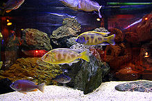

he Tbilisi Zoological Park (Georgian: თბილისის ზოოლოგიური პარკი, romanized: tbilisis zoologiuri p'ark'i) is the oldest and largest zoo in Georgia, in the country's capital of Tbilisi. Founded in 1927, it is located in the Vere River valley in central Tbilisi. The zoo was heavily affected by a flood on 14 June 2015, leaving many of its inhabitants dead or on the loose. Prior to that, the zoo occupied the area of approximately 120 hectares and was populated by around 300 species, native to the Caucasus as well as other regions of the world.
The Tbilisi Zoo was established by the decision of the Tbilisi City Council on 10 February 1927. It was designed by a group of Georgian and Russian specialists. The zoo was further expanded in the 1930s. Initially, the zoo consisted of 4 sections: Caucasian or Local; Fauna of the USSR; Exotic animals; Agricultural animals.[1] At its heyday in the 1970s, the Tbilisi Zoo was home to more than 1,000 animals and enjoyed more than 500,000 visitors per year. The zoo fell into disrepair as a result of economic collapse and political unrest that hit post-Soviet Georgia in the 1990s, with a large portion of its funding coming from city budget cuts. A World Society for the Protection of Animals representative, Neil Trent, reported in 1993 that more than half of the animals at the zoo had died of starvation or cold since 1991.[2] For nearly fifty years until 2013, one of the attractions of the zoo was a photo studio run by the photographer, Victor Sukiasov, who created papier-mâché horses for children to sit on for their picture to be taken.[3] The zoo experienced a modest revival in the late 2000s. A marine aquarium, the first s uch establishment in the Caucasus, was opened in 2007. The zoo belongs to the Tbilisi City Hall and largely depends on funding allocated from the city budget.[1] In 2012, the government of Tbilisi decided to relocate the zoo from the city's centre to a zoological and recreation complex adjacent to the Tbilisi Sea, a large reservoir at the eastern outskirts of Tbilisi. A project developed by the Australia-based architecture firm Hassell was to include "an entrance hub, boulevard, a secondary hub with playground and café, inner zoo and an outer open range zoo as well as woodland areas."[4] Due to the lack of funds, the relocation was delayed and the zoo remained at its old location,[5] when, on 14 June 2015, the swollen Vere river flooded the zoo. Several of its inhabitants died, while many surviving animals, such as a hippopotamus, lions, tigers, bears, and wolves, escaped to the streets of Tbilisi. Some animals were recaptured but several were shot by emergency forces. In total, the zoo lost nearly half of its inhabitants, as well as three keepers who lived onsite. The current director of the Tbilisi Zoo is Zurab Gurielidze
